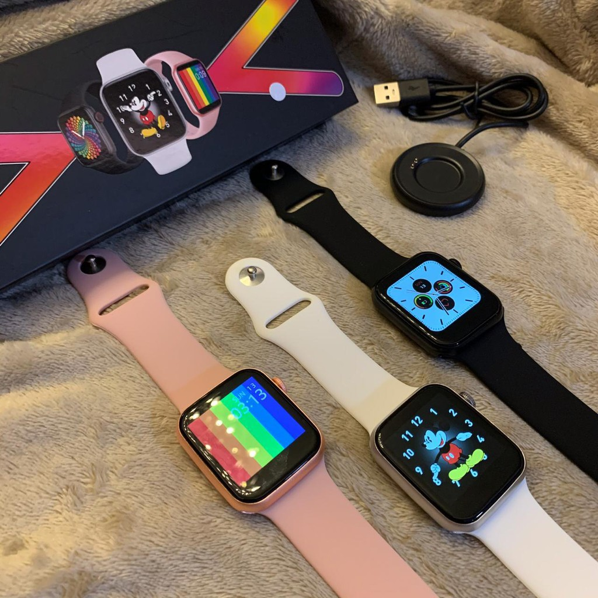
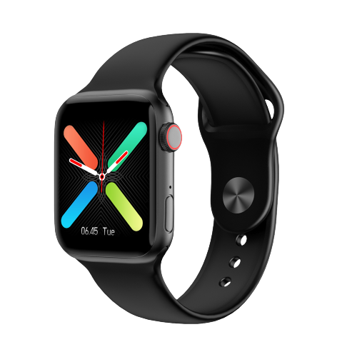
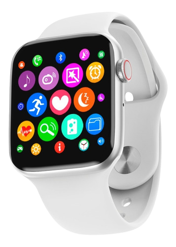
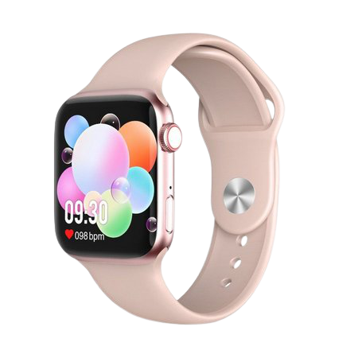

SMARTWACHT G500
RELÓGIO INTELIGENTE

Design atrativo com caixa retangular
Não importa se deseja que o seu novo relógio presuma da aparência perfeita ou se o quer para treinar. O G500 permitirá que faça as duas coisas. Tem um design bastante semelhante ao do Apple Watch, com um corpo retangular feito de uma liga de metal e policarbonato, leve e resistente ao mesmo tempo. Neste caso, foi incluído um botão físico no lado, com o qual poderá bloquear e desbloquear confortavelmente o seu ecrã.

Controle seu coração com Monitor de Frequência Cardíaca
Mas o que é realmente importante vai por dentro. O G500 fornece uma medição contínua e dinâmica da frequência cardíaca, esteja a descansar ou a praticar desporto. Também controla e avalia a saúde do coração usando a tecnologia ECG, podendo realizar eletrocardiogramas. Pode também efetuar medição de temperatura do corpo. Desta forma, obteremos uma referência precisa do nosso estado de saúde para otimizar o nosso treinamento, embora nunca devamos tomá-lo como um diagnóstico médico.
Passos, distância e calorias com modos de desporto
Além da sua saúde, poderá controlar todas as suas atividades diárias. O relógio G500 conta os seus passos, a distância percorrida e as calorias queimadas, adaptando essas medidas ao desporto que estiver a praticar a cada momento, graças aos modos de desporto: caminhar, correr, ciclismo, ténis de mesa, badminton, basquetebol, saltar à corda, futebol e ioga.
Análises do sono e despertador
Dormir bem é tão importante para a nossa saúde física e mental como fazer uma dieta saudável ou exercício diariamente. Este smartwatch analisa os seus padrões de sono e indica o total de horas que dormiu, aquelas que passou em sono leve, aquelas em sono profundo e nas quais esteve acordado. Além disso, poderá colocar um alarme para lhe acordar com uma vibração suave.
Lembrete sedentário
Além disso, uma vida sedentária não é boa para a sua condição física; portanto, enviará alertas quando estiver muito tempo inativo.
O G500 CONTA COM MUITO MAIS FUNCÕES !!!
QUANTO VALE CUIDAR DE SUA SAÚDE?
QUANTO VOCê ACHA QUE VALE, MONITORAR SUA SAÚDE DIARIAMENTE ?
TODAS ESSAS FUNÇÕES QUE VÃO TE AJUDAR A TER UMA VIDA MAIS SAUDÁVEL,
POR APENAS R$